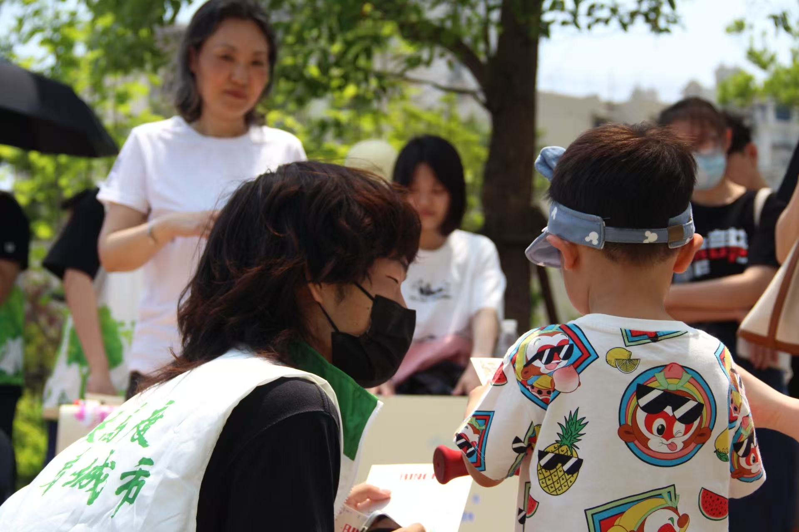

城乡规划 6 年设计功底训练，从城市设计到空间营造，积累了系统的设计思维与审美判断力，曾获国际设计竞赛二等奖（详见作品页）。
从产业研究到项目谋划、可研编制（单份 10 万+字），再到 AI 硬件产品需求拆解与 PRD 输出，始终用结构化思维把复杂问题拆解为可执行的路径。同时具备数据分析能力与思维，在竞赛项目中应用 XGBoost 建模解释城市空间现象（详见作品页）。
掌握 Harness Engineering 的 Vibe Coding 方法论，独立开发 AI 热点监控推送工具、AI 闯关学习微信小程序、AI 考研辅导助手（专业领域 RAG）等项目，以及你正在看的这个网站。
在此芯科技跨部门推动产品方案对齐，在同济咨询对接政企需求并独立汇报，在本科项目、竞赛中时常担任组长统筹协调，在校园组足球赛场上多年团队协作并屡创佳绩。
围绕 AI BOX / AI NAS，开展行业研究、竞品分析、需求规划与 PRD 输出，结合 P1 芯片能力做功能方案与价值卖点表达。
对接政企客户需求，独立拜访沟通并汇报；独立完成产业研究报告与多份可研（单份 10万+字），搭建可研编制 Work Flow 与项目谋划 Agent。
建筑与城市规划学院。核心课程：人工智能辅助空间规划、智能城市规划前沿、城市发展和城市规划的经济学原理等。
核心课程：城市经济学、城市社会学、城市地理学、区域规划、总体规划、详细规划、城市设计、Python等。
以下为原型占位版式，最终内容、配图与外链以正式版为准。
融合 POI、街景影像与居民文本，用 XGBoost 等模型识别影响因子并推演优化策略。
查看详情 →第一时间抓取全球 AI 动态（如大模型更新），定时向用户推送，响应式 Web + Agent Skills。
查看详情 →把可研编制与项目谋划流程沉淀成可复用的工作流与 Agent，并编写策划生图指南。
查看详情 →结合政策导向、资源禀赋与市场动向，独立完成 5万+字业态策划报告及汇报 PPT。
查看详情 →负责数据清洗、空间落位与分析制图，产出项目类型图谱研究报告。
查看详情 →实地走访 + 数据分析，梳理新浜村资源底板，评估连片发展潜力并提出策略。
查看详情 →一作。以"缘"为题眼，从宏观到微观链接川沙的空间肌理、产业与社会，描绘未来创新家园。
查看详情 →聚焦"就业难"背景下青年住房困境，分析其形成机制并提出优化策略。
查看详情 →作为同济大学校园组足球队成员，多次代表学校参加全国大学生足球联赛/上海市大学生足球联盟杯赛、联赛，6次夺得上海市冠军，并在全国赛中闯入四强。

参与"一米高度看城市"儿童友好主题活动，从儿童视角探索城市规划改进方向；投身乡村规划建设实践（同期获最佳营造奖），结合专业知识服务基层空间营造。